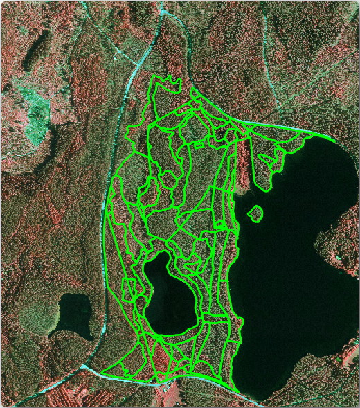
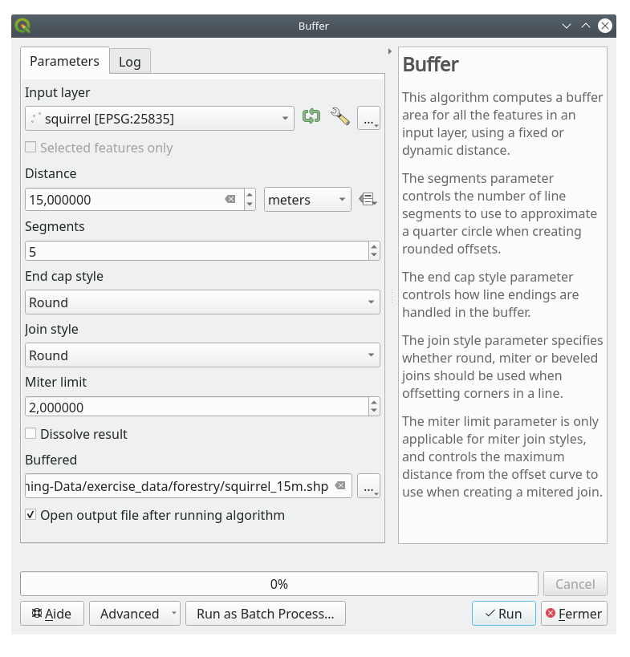
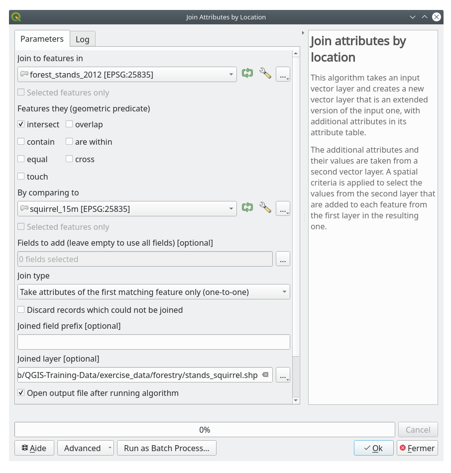
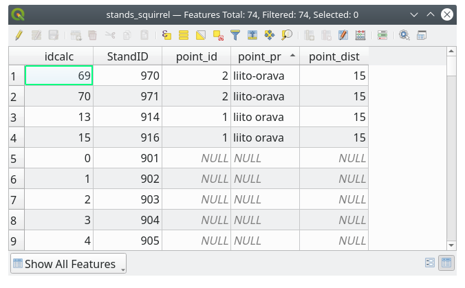

14.4. သင်ခန်းစာ - Forest Stand များကို Update ပြုလုပ်ခြင်း (Lesson: Updating Forest Stands)
Inventory မြေပုံအဟောင်းများမှ အချက်အလက်များကို digitize ပြုလုပ်ပြီးဖြစ်ကာ forest stand များတွင် သက်ဆိုင်ရာ အချက်အလက်များ ထည့်သွင်းပြီးဖြစ်ပါသည်။ နောက်တစ်ဆင့်အနေဖြင့် လက်ရှိသစ်တောအခြေအနေ inventory ကိုဖန်တီးရန်ဖြစ်ပါသည်။
Forest stand အသစ်များကို ကောင်းကင်ဓာတ်ပုံတစ်ခုကိုအသုံးပြုပြီး digitize ပြုလုပ်ပါမည်။ ယခင်သင်ခန်းစာအတိုင်းပင် Color Infrared (CIR) ကောင်းကင်ဓာတ်ပုံတစ်ခုကို အသုံးပြုပါမည်။ ဤဓာတ်ပုံအမျိုးအစားသည် အပြာရောင် (blue) light အစား အနီအောက် (infrared) light ကိုဖမ်းယူခြင်းဖြစ်ပြီး အပင်ဧရိယာများကို လေ့လာရာတွင် ကျယ်ပြန့်စွာအသုံးပြုပါသည်။
Forest stand များကို digitize ပြုလုပ်ပြီးသောအခါ ထိန်းသိမ်းရေးစည်းမျဉ်းများအရ ကန့်သတ်ချက်အသစ်များကဲ့သို့သော အချက်အလက်များကို ထည့်သွင်းသွားမည်ဖြစ်ပါသည်။
ဤသင်ခန်းစာအတွက် ရည်မှန်းချက်- CIR ကောင်းကင်ဓာတ်ပုံမှ forest stand အသစ်များကို digitize ပြုလုပ်ရန်နှင့် အခြား dataset များမှ အချက်အလက်များထည့်သွင်းရန်။
14.4.1. ★☆☆ Forest Stand အဟောင်းများနှင့် လက်ရှိ ကောင်းကင်ဓာတ်ပုံကို နှိုင်းယှဉ်ခြင်း (Comparing the Old Forest Stands to Current Aerial Photographs)
National Land Survey of Finland တွင် ကောင်းကင်ဓာတ်ပုံများ၊ သမားရိုးကျမြေမျက်နှာသွင်ပြင်မြေပုံများ၊ DEM ၊ LiDAR data အစရှိသည့် ပထဝီဝင်ဆိုင်ရာ data များကို ဒေါင်းလုဒ်ပြုလုပ်ခွင့်ပေးထားပါသည်။ ဝန်ဆောင်မှုကို ဤတွင် အင်္ဂလိပ်ဘာသာဖြင့် ရရှိနိုင်ပါသည်။ ဤလေ့ကျင့်ခန်းတွင် အသုံးပြုသော ကောင်းကင်ဓာတ်ပုံကို ထိုဝန်ဆောင်မှုမှ ဒေါင်းလုဒ်ရယူထားသော orthorectified CIR ဓာတ်ပုံနှစ်ချပ် (M4134F_21062012 နှင့် M4143E_21062012) မှ ဖန်တီးထားပါသည်။
QGIS ကိုဖွင့်ပြီး ထဲတွင် project ၏ CRS ကို ETRS89 / ETRS-TM35FIN ဟုသတ်မှတ်ပါ
rautjarvi_aerial.tifဟူသည့် CIR ဓာတ်ပုံကို project ထဲသို့ ထည့်သွင်းပါ-File manager browser မှတဆင့်
exercise_data\forestry\folder သို့သွားပါrautjarvi_aerial.tifဖိုင်ကို project ထဲသို့ click နှိပ်ဖိဆွဲကာ ထည့်သွင်းပါ
QGIS project ကို
digitizing_2012.qgsအနေဖြင့် သိမ်းဆည်းပါ
CIR ဓာတ်ပုံများသည် 2012 မှဓာတ်ပုံများဖြစ်ပါသည်။ 1994 ခုနှစ်တွင် ဖန်တီးခဲ့သော stand များနှင့် နှစ် ၂၀ နီးပါးကြာပြီးနောက် stand အခြေအနေများကို နှိုင်းယှဉ်ကြည့်နိုင်ပါသည်။
ယခင်သင်ခန်းစာတွင် ဖန်တီးခဲ့သော
forest_stands_1994.shplayer ကိုထည့်သွင်းပါ-File manager browser မှတဆင့်
exercise_data\forestry\folder သို့သွားပါforest_stands_1994.shpဖိုင်ကို project ထဲသို့ click နှိပ်ဖိဆွဲကာ ထည့်သွင်းပါ
Polygon များကို ဖြတ်ပြီး မြင်နိုင်စေရန်အတွက် Layer အတွက် သင်္ကေတကိုသတ်မှတ်ပါ-
forest_stands_1994 တွင် right-click နှိပ်ပါ
Properties ကိုရွေးချယ်ပါ
 Symbology tab သို့သွားပါ
Symbology tab သို့သွားပါFill color တွင် transparent fill ဟုသတ်မှတ်ပါ
Stroke color တွင် purple (ခရမ်းရောင်) သတ်မှတ်ပါ
Stroke width တွင်
0.50 mmဟုသတ်မှတ်ပါ
Forest stand အဟောင်းများသည် သင်အမြင်အရ အဓိပ္ပါယ်ကောက်ယူထားသော တစ်မျိုးတည်းဖြစ်သည့် (homogeneous) forest အတိုင်း ဟုတ်မဟုတ်ကို စစ်ဆေးသုံးသပ်ပါ။
ဧရိယာပတ်လည်ကို zoom အချုံ့/အချဲ့နှင့် မြင်ကွင်းရွှေ့ခြင်းများ လုပ်ဆောင်ပါ။ အချို့ forest stand အဟောင်းများသည် ဓာတ်ပုံနှင့် ကိုက်ညီနေသေးပြီး အခြားအရာများသည် မကိုက်ညီတော့သည်ကို သတိပြုမိပါလိမ့်မည်။
၎င်းသည် သာမန်အခြေအနေတစ်ခုဖြစ်ပါသည်၊ အကြောင်းမှာ နှစ်ပေါင်း ၂၀ ခန့်ကြာမြင့်သွားပြီဖြစ်ပြီး အမျိုးမျိုးသော သစ်တောလုပ်ငန်းများ (သစ်ထုတ်ခြင်း၊ ပင်ကျပ်နှုတ်ခြင်း၊…) ကို လုပ်ဆောင်ထားသောကြောင့်ဖြစ်သည်။ 1992 ခုနှစ်တွင် digitize ပြုလုပ်ခဲ့သူသည် Forest stand များကို homogeneous အဖြစ်မြင်တွေ့ခဲ့ရပြီး အချိန်ကြာလာသည်နှင့် အချို့သစ်တောများသည် နည်းလမ်းအမျိုးမျိုးဖြင့် တိုးတက်လာသည်လည်း ဖြစ်နိုင်ပါသည်။ ထိုအချိန်က forest inventory ဦးစားပေးမှုများသည် ယနေ့ခေတ်နှင့် ကွဲပြားခဲ့သောကြောင့်လည်း ဖြစ်နိုင်ပါသည်။
နောက်တစ်ဆင့်အနေဖြင့် forest stand အဟောင်းများကိုအသုံးမပြုပဲ ဤဓာတ်ပုံအတွက် forest stand အသစ်များကိုဖန်တီးပါမည်။ နောက်ပိုင်းတွင် ၎င်းတို့အကြား ကွာခြားမှုကို နှိုင်းယှဉ်နိုင်ပါသည်။
14.4.2. ★☆☆ CIR ဓာတ်ပုံကို အဓိပ္ပါယ်ကောက်ယူခြင်း (Interpreting the CIR Image)
Inventory အဟောင်းလုပ်ခဲ့သော ဧရိယာကိုပင် digitize ပြုလုပ်ပါမည်၊ road များနှင့် lake ကြားထဲရှိ ဧရိယာဖြစ်ပါသည်။ ဧရိယာတစ်ခုလုံးကို digitize ပြုလုပ်ရန်မလိုပါ၊ ယခင်လေ့ကျင့်ခန်းရှိ forest stand အများစု ပါရှိပြီးသားဖြစ်သော vector ဖိုင်ဖြင့် စတင်လုပ်ဆောင်နိုင်ပါသည်။
 forest_stands_1994 layer ကိုဖယ်ရှားပါ
forest_stands_1994 layer ကိုဖယ်ရှားပါexercise_data\forestry\forest_stands_2012.shpဖိုင်အား project ထဲသို့ထည့်သွင်းပါPolygon များတွင် အဖြည့်အရောင်များမရှိစေပဲ border မျဉ်းများကို မြင်ရနိုင်စေရန်အတွက် layer ၏ style ကိုသတ်မှတ်ပါ
forest_stands_2012layer ၏ Properties dialog ကိုဖွင့်ပါ- Symbology tab သို့သွားပါ
Fill color တွင် transparent fill သတ်မှတ်ပါ
Stroke color တွင် green သတ်မှတ်ပါ
Stroke width တွင်
0.50 mmဟုသတ်မှတ်ပါ

Inventory ဧရိယာ၏ မြောက်ဘက်အပိုင်းတွင် forest stand များမရှိသေးသည်ကို မြင်ရနိုင်ပါသည်။ လုပ်ဆောင်ရမည်မှာ ထို မရှိသေးသော forest stand များကို digitize ပြုလုပ်ရန်ဖြစ်သည်။
မစတင်မီတွင် digitize ပြုလုပ်ထားပြီးသော forest stand များနှင့် ဓာတ်ပုံထဲရှိ သက်ဆိုင်ရာ forest များကို အချိန်ပေးပြီး ကြည့်ရှုစစ်ဆေးပါ။ Forest stand border များကို မည်သို့ဆုံးဖြတ်သည်နှင့်ပတ်သက်ပြီး မြင်အောင် ကြိုးစားကြည့်ပါ၊ သင့်တွင် သစ်တောနှင့်ဆိုင်သောဗဟုသုတအချို့ရှိလျှင် အထောက်အကူဖြစ်ပါသည်။
ထည့်သွင်းစဉ်းစားရမည့်အချို့အချက်များ-
မည်သည့်သစ်တောများတွင် ရွက်ကြွေ (deciduous) မျိုးစိတ်များ (Finland တွင် အများစုသည် birch forest များဖြစ်ကြသည်) ရှိသလဲနှင့် မည်သည့်သစ်တောများတွင် ထင်းရှူး (conifer) မျိုးစိတ်များရှိသလဲ (ဤဧရိယာတွင် pine သို့မဟုတ် spruce များရှိကြသည်)။ CIR ဓာတ်ပုံများထဲတွင် deciduous မျိုးစိတ်များကို အနီရောင်တောက်တောက် အနေဖြင့် ပြသလေ့ရှိပြီး conifer များကို အစိမ်းရင့်ရောင် အနေဖြင့် ပြသလေ့ရှိပါသည်။
သစ်တောသည် မည်မျှသက်တမ်းရှိပြီလဲ။ ဓာတ်ပုံထဲတွင် အပင်ရွက်အုပ်များ၏ အရွယ်အစားကို ဖော်ထုတ်နိုင်ပါသည်။
အမျိုးမျိုးသော forest stand များသည် မည်မျှ သိပ်သည်းနေပါသလဲ။ မကြာသေးမီက thinning (ပင်ကျပ်နှုတ်ခြင်း) လုပ်ထားသော forest stand တစ်ခုတွင် အပင်ရွက်အုပ်များအကြား နေရာလွတ်များကို မြင်ရမည်ဖြစ်ပြီး ၎င်း၏ပတ်လည်ရှိ အခြား forest stand များမှ အလွယ်တကူ ခွဲခြားနိုင်ပါသည်။
အပြာရောင် ဧရိယာများသည် ကျတ်တီးမြေများ၊ လမ်းများနှင့် မြို့ပြဧရိယာများ၊ ကြီးထွားမှုမရှိသေးသော စိုက်ပျိုးသီးနှံပင်များ အစရှိသည်တို့ကို ဖော်ပြပါသည်။
Forest stand များကို ဖော်ထုတ်ရာတွင် ဓာတ်ပုံကို အလွန်နီးကပ်စွာ zoom ချဲ့မကြည့်ပါနှင့်။ ဤဓာတ်ပုံအတွက် 1:3000 နှင့် 1:5000 စကေးသည် လုံလောက်ပါသည်။ အောက်ပါပုံကိုကြည့်ပါ (1:4000 စကေး)-

14.4.3. ★☆☆ မိမိကိုယ်တိုင်ကြိုးစားကြည့်ပါ - CIR ဓာတ်ပုံမှ Forest Stand များကို Digitize ပြုလုပ်ခြင်း (Try Yourself: Digitizing Forest Stands from CIR Imagery)
Forest stand များကို digitize ပြုလုပ်သောအခါ အပင်မျိုးစိတ်အရ၊ သစ်တောသက်တမ်းအရ၊ အပင်သိပ်သည်းမှုအရ homogeneous (တစ်မျိုးတည်းဖြစ်သည့်) ဖြစ်နိုင်သမျှဖြစ်သော သစ်တောဧရိယာများကို ရရှိရန်လုပ်ဆောင်သင့်ပါသည်။ အလွန်အသေးစိတ်လုပ်ဆောင်ပါက သေးငယ်သော forest stand များ ရာဂဏန်းနှင့်ချီပြီး ရရှိမည်ဖြစ်ပြီး အသုံးဝင်မှုရှိလိမ့်မည်မဟုတ်ပါ။ မသေးလွန်း (အနည်းဆုံး 0.5 ဟက်တာ) ပြီး မကြီးလွန်းသော (3 ဟက်တာထက်မပိုသော) forest stand များကို ရရှိရန် လုပ်ဆောင်သင့်ပါသည်။
ထိုအချက်များကို မှတ်ထားပြီး မရှိသေးသော forest stand များကို digitize စတင်လုပ်ဆောင်နိုင်ပြီဖြစ်ပါသည်။
Snapping နှင့် topology ရွေးချယ်စရာများကို သတ်မှတ်ပါ-
သို့သွားပါ
 Enable Snapping ကိုနှိပ်ပြီး Advanced Configuration ကို select လုပ်ပါ
Enable Snapping ကိုနှိပ်ပြီး Advanced Configuration ကို select လုပ်ပါ forest_stands_2012 layer ကို အမှန်ခြစ်ပါ
forest_stands_2012 layer ကို အမှန်ခြစ်ပါType တွင် Vertex ဟုသတ်မှတ်ပါ
Tolerance တွင်
10ဟုသတ်မှတ်ပါUnits တွင် pixels ဟုသတ်မှတ်ပါ
Avoid Overlap အောက်ရှိ box တွင် အမှန်ခြစ်ပါ
 Topological editing ကိုနှိပ်ပါ
Topological editing ကိုနှိပ်ပါ Follow Advanced Configuration ကိုရွေးချယ်ပါ
Follow Advanced Configuration ကိုရွေးချယ်ပါDialog ကိုပိတ်လိုက်ပါ

Layer list ထဲရှိ forest_stands_2012 layer ကို select လုပ်ပါ
Editing စတင်ရန်
 Toggle Editing ကိုနှိပ်ပါ
Toggle Editing ကိုနှိပ်ပါယခင်သင်ခန်းစာထဲရှိ နည်းလမ်းများအတိုင်း digitizing ကိုစတင်ပါ။ တစ်ခုတည်းသော ကွာခြားချက်မှာ ယခုအခါတွင် snapping ပြုလုပ်ရန် မည်သည့် point layer မှမရှိတော့ပါ။ ဤဧရိယာအတွက် forest stand အသစ် 14 ခုခန့် ရရှိသင့်ပါသည်။ Digitize ပြုလုပ်နေစဉ်
StandIDfield ထဲတွင်901မှစတင်ပြီး ဂဏန်းများကို ဖြည့်သွင်းပါ။လုပ်ဆောင်မှုပြီးဆုံးသွားသောအခါ layer သည် အောက်ပါပုံစံအတိုင်းဖြစ်သင့်ပါသည်-

CIR ဓာတ်ပုံများမှ အဓိပ္ပါယ်ကောက်ယူထားသည့်အတိုင်း 2012 ခုနှစ်တွင်ရှိသော အမျိုးမျိုးသော forest stand များကိုပြသနေသည့် polygon များကို ရရှိပြီဖြစ်ပါသည်။ သို့သော် forest inventory data များမပါရှိသေးပါ။ ထိုအတွက် တောထဲသို့သွားရောက်ပြီး forest stand တစ်ခုချင်းစီအတွက် forest attribute များကိုခန့်မှန်းရာတွင်အသုံးပြုရမည့် sample data အချို့ကို ကောက်ယူရပါလိမ့်မည်။ နောက်လာမည့်သင်ခန်းစာတွင် ထိုအကြောင်းကို လေ့လာရပါမည်။
ဤဧရိယာအတွက် ထည့်သွင်းစဉ်းစားရန်လိုအပ်သည့် conservation regulation များအကြောင်း ထပ်ဆောင်းအချက်အလက်များအချို့ကို ထည့်သွင်းပေးနိုင်ပါသည်။
14.4.4. ★☆☆ လိုက်လုပ်ကြည့်ပါ - Forest Stand များကို Conservation အချက်အလက်များဖြင့် Update ပြုလုပ်ခြင်း (Follow Along: Updating Forest Stands with Conservation Information)
ယခုလုပ်ဆောင်နေသည့်ဧရိယာအတွက် သစ်တောစီမံကိန်းများရေးဆွဲသောအခါ ထည့်သွင်းစဉ်းစားရမည့် conservation regulation အချို့ရှိပါသည်-
ထိန်းသိမ်းကာကွယ်ထားသော Siberian flying squirrel (Pteromys volans) မျိုးစိတ်၏ တည်နေရာ နှစ်ခုကို ဖော်ထုတ်ပြီးဖြစ်ပါသည်။ Regulation အရ တည်နေရာများပတ်လည် 15 မီတာဧရိယာကို ဘာမှမလုပ်ပဲ ထားခဲ့ရပါမည်။
ဧရိယာထဲရှိ ချောင်းတစ်လျှောက်တွင် ပေါက်ရောက်နေသော Riparian (ကမ်းနားပေါက်ရောက်သော) forest ကို ထိန်းသိမ်းကာကွယ်ထားရပါမည်။ ကွင်းဆင်းလေ့လာသောအခါ ချောင်း၏တစ်ဖက်တစ်ချက် 20 မီတာကို ထိန်းသိမ်းကာကွယ်ထားရမည်ကို တွေ့ရှိခဲ့ရပါသည်။
Squirrel ၏တည်နေရာများပါဝင်သော vector ဖိုင်တစ်ခုရှိပါသည်၊ မြောက်ဘက်ဧရိယာမှ lake ဘက်သို့ စီးဆင်းနေသော digitize ပြုလုပ်ထားသည့် ချောင်းပါဝင်သော vector ဖိုင်တစ်ခုရှိပါသည်။
exercise_data\forestry\folder မှsquirrel.shpနှင့်stream.shpဖိုင်များကို project ထဲသို့ ထည့်သွင်းပါ။squirrellayer ကိုကြည့်ရှုရန် Open Attribute Table tool ကိုအသုံးပြုပါ
Open Attribute Table tool ကိုအသုံးပြုပါSiberian flying squirrel အနေဖြင့် သတ်မှတ်ထားသော တည်နေရာ နှစ်ခု ရှိသည်ကို တွေ့မြင်နိုင်မည်ဖြစ်ပြီး ထိန်းသိမ်းကာကွယ်ရမည့်ဧရိယာကို တည်နေရာများမှ 15 မီတာအကွာအဝေးဖြင့် ညွှန်ပြထားသည်ကို တွေ့မြင်နိုင်ပါသည်။
ထိန်းသိမ်းကာကွယ်ရမည့်ဧရိယာကို ပိုမိုတိကျစွာ သတ်မှတ်ကြည့်ပါမည်။ Point တည်နေရာများပတ်လည်တွင် ထိန်းသိမ်းကာကွယ်ရမည့်အကွာအဝေးကို အသုံးပြုပြီး buffer တစ်ခုကို ဖန်တီးမည်ဖြစ်ပါသည်။
ကိုဖွင့်ပါ
Input layer တွင်
 squirrel ဟုသတ်မှတ်ပါ
squirrel ဟုသတ်မှတ်ပါDistance တွင်
15 metersဟုသတ်မှတ်ပါBuffered တွင်
exercise_data\forestry\squirrel_15m.shpဟုသတ်မှတ်ပါ- Open output file afer running algorithm ကိုအမှန်ခြစ်ပါ
Run ကိုနှိပ်ပါ
လုပ်ငန်းစဉ်ပြီးဆုံးပါက Close ကိုနှိပ်ပါ။

ဧရိယာ၏ မြောက်ဘက်အပိုင်းရှိ တည်နေရာကို zoom ချဲ့ကြည့်ပါက buffer ဧရိယာသည် ကပ်လျက် stand နှစ်ခုပေါ်တွင် ကျရောက်နေသည်ကို တွေ့ရပါလိမ့်မည်။ ဆိုလိုသည်မှာ အဆိုပါ stand ထဲတွင် သစ်တောလုပ်ငန်းတစ်ခုလုပ်ဆောင်သည့်အချိန်တိုင်း ထိန်းသိမ်းကာကွယ်ထားသော တည်နေရာကိုလည်း ထည့်သွင်းစဉ်းစားသင့်သည်ဟု ဆိုလိုခြင်းဖြစ်ပါသည်။
Squirrel များ၏ တည်နေရာများကို ထိန်းသိမ်းကာကွယ်ရန်အတွက် forest stand အသစ်များထဲတွင် attribute (column) အသစ်တစ်ခုထည့်သွင်းရပါမည်၊ ထို attribute ထဲတွင် ထိန်းသိမ်းကာကွယ်ရမည့် တည်နေရာများအကြောင်း အချက်အလက်များပါဝင်ပါလိမ့်မည်။ သစ်တောလုပ်ငန်းတစ်ခုကို အစီအစဉ်ချသည့်အချိန်တိုင်း ထိုအချက်အလက်များကို ရရှိလိမ့်မည်ဖြစ်ပြီး ကွင်းလုပ်ငန်းအဖွဲ့သည် လုပ်ငန်းမစတင်မီတွင် ဘာမှမလုပ်ပဲထားခဲ့ရမည့် ဧရိယာကို အမှတ်အသားပြုနိုင်မည်ဖြစ်သည်။
Squirrel များနှင့်ပတ်သက်သော အချက်အလက်များကို forest stand များနှင့် ချိတ်ဆက်ရန် Join attributes by location algorithm ကိုအသုံးပြုနိုင်ပါသည်-
ကိုဖွင့်ပါ။
Join to features in တွင်
forest_stands_2012 ဟုသတ်မှတ်ပါGeometric predicate ထဲတွင်
intersect ကိုအမှန်ခြစ်ပါBy comparing to တွင်
squirrel_15m ကိုသတ်မှတ်ပါJoin type တွင် Take attributes of the first matching feature only (one-to-one) ဟုသတ်မှတ်ပါ
Discard records which could not be joined ကိုအမှန်ခြစ်ဖြုတ်ထားပါ
Joined layer တွင်
exercise_data\forestry\stands_squirrel.shpဟုသတ်မှတ်ပါ- Open output file afer running algorithm ကိုအမှန်ခြစ်ပါ
Run ကိုနှိပ်ပါ
လုပ်ငန်းစဉ်ပြီးဆုံးပါက dialog ကိုပိတ်နိုင်ပါသည်။

stands_squirrel.shp ဟုခေါ်သော forest stand layer အသစ်တစ်ခုရရှိပြီဖြစ်ပြီး Siberian flying squirrel အတွက် ထိန်းသိမ်းကာကွယ်ရေးအချက်အလက်များပါဝင်နေမည်ဖြစ်သည်။
stands_squirrellayer ၏ attribute ဇယားကို ဖွင့်ပါဇယားခေါင်းစီးတွင် point_pr field ကို click နှိပ်ပြီး ဇယားကို sort လုပ်ပါ။
 ထိန်းသိမ်းကာကွယ်ရေး တည်နေရာများအကြောင်း အချက်အလက်များပါရှိသော forest stand အချို့ကို မြင်တွေ့ရနိုင်ပါသည်။ သစ်တောမန်နေဂျာအနေဖြင့် Forest stand data ထဲရှိ အချက်အလက်များကို ကြည့်ရှုပြီး ထိန်းသိမ်းကာကွယ်ရေးထည့်သွင်းစဉ်းစားစရာများကို သိနိုင်မည်ဖြစ်သည်။ squirrel dataset မှ တည်နေရာများကိုရရှိနိုင်မည်ဖြစ်ပြီး ကွင်းထဲသို့သွားကာ တည်နေရာပတ်လည် သက်ဆိုင်ရာ buffer ကို အမှတ်အသားလုပ်ပေးခြင်းဖြင့် squirrels များကို အနှောင့်အယှက်ပေးခြင်းမှ ရှောင်ရှားနိုင်မည်ဖြစ်သည်။
14.4.5. ★☆☆ မိမိကိုယ်တိုင်ကြိုးစားကြည့်ပါ - ချောင်းသို့အကွာအဝေးဖြင့် Forest Stand များကို Update ပြုလုပ်ခြင်း (Try Yourself: Updating Forest Stands with Distance to the Stream)
ထိန်းသိမ်းကာကွယ်ထားသော squirrel တည်နေရာများအတွက် လုပ်ဆောင်ခဲ့သည့်နည်းအတိုင်း Forest stand များကို ချောင်းနှင့်ဆက်စပ်သော ထိန်းသိမ်းကာကွယ်ရေးအချက်အလက်များဖြင့် update ပြုလုပ်နိုင်ပါသည်။ အချက်တစ်ချို့မှာ-
ချောင်းပတ်လည် buffer သည်
20မီတာဖြစ်ပါသည်Vector ဖိုင်တစ်ခုထဲမှာပင် ထိန်းသိမ်းကာကွယ်ရေးအချက်အလက်များအားလုံးကို ရှိစေချင်သည့်အတွက်
stands_squirrel.shpကို base layer အဖြစ်အသုံးပြုပါOutput ဖိုင်ကို
forest_stands_2012_protect.shpဟု အမည်ပေးပါ
လုပ်ငန်းစဉ်ပြီးဆုံးပါက output layer ၏ attribute ဇယားကို ဖွင့်ကြည့်ပြီး ချောင်းနှင့်ဆက်စပ်သော riparian forest stand များအတွက် ထိန်းသိမ်းကာကွယ်ရေးအချက်အလက်များအားလုံး ပါဝင်ခြင်းရှိ/မရှိကို အတည်ပြုစစ်ဆေးပါ။
ရလာဒ်ကို ကျေနပ်မှုရှိပါက QGIS project ကိုသိမ်းဆည်းပါ။
14.4.6. နိဂုံးချုပ် (In Conclusion)
Forest stand များကို digitize ပြုလုပ်ရန် CIR ဓာတ်ပုံများကို မည်သို့အဓိပ္ပါယ်ကောက်ယူရမည်ကို မြင်တွေ့ခဲ့ပြီးဖြစ်ပါသည်။ ပိုမိုတိကျသော stand များကိုဖန်တီးရန် အလေ့အကျင့်အချို့ရှိရမည်ဖြစ်ပြီး မြေအမျိုးအစားမြေပုံကဲ့သို့သော အခြား အချက်အလက်များကို အသုံးပြုခြင်းဖြင့် ပိုမိုကောင်းမွန်သော ရလာဒ်များကို ရရှိနိုင်ပါသည်၊ သို့သော် ယခုလေ့ကျင့်ခန်းသည် ထိုအတွက် အခြေခံအဆင့် ဖြစ်ပါသည်။ အခြား dataset များမှ အချက်အလက်များထည့်သွင်းခြင်းသည် အသေးအဖွဲအလုပ်တစ်ခုသာဖြစ်ပါသည်။
14.4.7. နောက်ထပ်ဘာအကြောင်းအရာလဲ (What’s Next?)
သင် digitize ပြုလုပ်ထားခဲ့သော forest stand များကို အနာဂတ် သစ်တောလုပ်ငန်းများအစီအစဉ်ချမှတ်ရာတွင် အသုံးပြုနိုင်မည်ဖြစ်ပါသည်၊ သို့သော် သစ်တောနှင့်ပတ်သက်သော အချက်အလက်များကို ပိုမိုရရှိရန် လိုအပ်နေပါသေးသည်။ သင် digitize ပြုလုပ်ထားခဲ့သော သစ်တောဧရိယာတွင် inventory ပြုလုပ်ရန်နှင့် သစ်တော parameter များ၏ ယေဘုယျခန့်မှန်းချက်ကို ရရှိရန် sampling plot (နမူနာကွက်) များ မည်သို့ချမှတ်ရမည်ကို နောက်လာမည့် သင်ခန်းစာတွင် လေ့လာရမည်ဖြစ်ပါသည်။